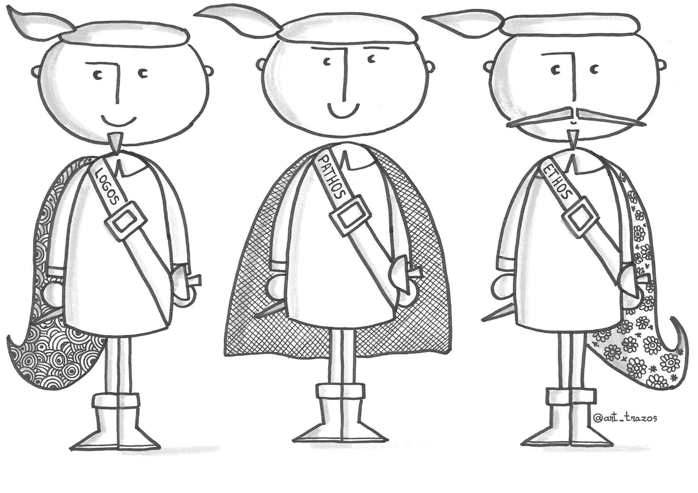
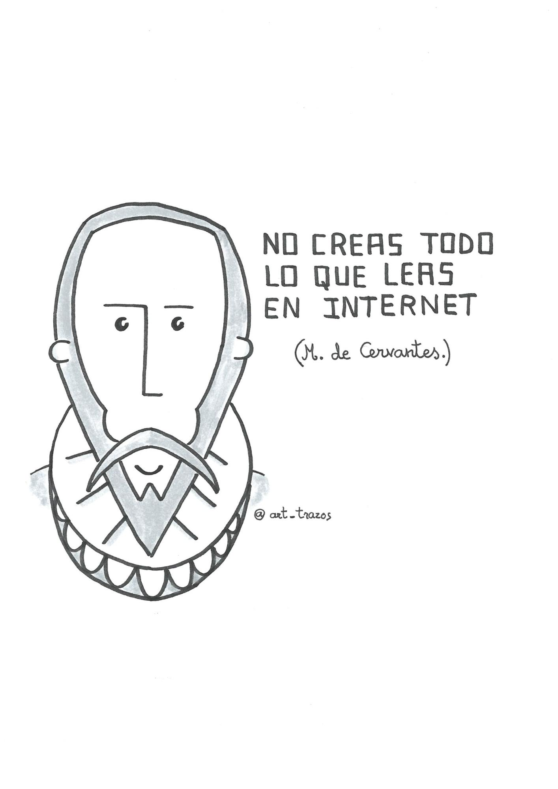

4.1 INVENTIO
Aristóteles (1.354 a.C) en su obra Retórica establece tres niveles que se deben abordar en el proceso de invención: ethos, logos y phatos.
En ¿Me hablas a mi?, Sam Leith (2011) denomina “mosqueteros de la retórica” a estos niveles en un intento de acercarnos a unos términos lejanos en el tiempo y, sin embargo, de absoluta vigencia.
Ethos hace referencia a la carta de presentación, a todo aquello que haga que el auditorio confíe en la persona que habla. Es fundamental tenerlo en cuenta en la primera parte de un acto comunicativo. ¿Cómo vas a conseguir que el auditorio te reconozca como el “guía del viaje”?
Logos es la esencia del contenido referencial del discurso: los datos, la teoría.
Pathos consiste en apelar a la emotividad del auditorio.

Logos, Ethos y Pathos. @art_trazos.
En el siguiente vídeo de Connor Neil publicado por TED-Ed (2013) se expone un ejemplo de cómo influyen estos tres elementos en una situación comunicativa. Se trata del análisis de una historia real muy conocida: un afamado y cotizado violinista da un recital en los subterráneos del metro siendo ignorado por una abrumadora mayoría de las personas que por allí pasan en ese momento.
Si, como hemos dicho anteriormente, la responsabilidad de que el mensaje llegue al receptor es del emisor (y no se debe culpabilizar al receptor), esta situación se explicaría tomando en consideración a los “tres mosqueteros” de la retórica junto al contexto.
Ethos y pathos nos devuelven, por tanto, al tema ya tratado: la necesaria conexión con el auditorio. Ahora nos centraremos en el nivel logos, en la fase de documentación, de dominio del tema y elaboración de nuestras propias ideas sobre él.
Michel Suñer (2008) habla de dos preparaciones: preparación remota como “proceso de enriquecimiento cultural de un orador, el cual dura toda la vida” y preparación próxima que incluye “ leer, escuchar, esquematizar, escribir, analizar, hablar y reflexionar ampliamente sobre las ideas que serán objeto de la comunicación”.

Peligros en esta etapa:
- Acumular más información (libros, webs, artículos…) de la que podemos asumir en el tiempo de preparación disponible ¡ojo con la infobesidad!
- No verificar los contenidos encontrados en la red y su calidad ¡ojo con la infoxicación!

Campaña cervantina contra la infoxicación. @art_trazos
- Perder de vista el nivel de conocimientos previo del auditorio. Por defecto o por exceso, tan arriesgado es no aportar nada nuevo a los destinatarios como alcanzar un nivel de especialización que no nos permita acomodar el mensaje a un público que se acerca a la mataria por primera vez. Este efecto se ha denominado por distintos autores la “maldición del conocimiento”
G. Álvarez (2012) nos indica unas preguntas que debemos responder en esta fase:
- ¿Cuál es el propósito del acto? ¿informar, defender, inspirar…? ¿qué cambio se espera en la audiencia? ¿de cuánto tiempo dispongo?
- ¿Qué idea fundamental quiero transmitir?
- ¿Qué conocimiento necesito? ¿sé todo lo que preciso? ¿necesito aprender algo?
Una vez respondidas estas cuestiones tendremos el contenido en bruto de la charla, la selección de contenidos. Este grueso de contenidos debe ser capaz de proporcionarnos:
- Un hilo conductor claro de las ideas que queremos transmitir. Este hilo nos da la posibilidad de dar coherencia a través de una idea general a las secundarias que se quieran tratar.
- Una perspectiva global del tema que nos permita abordarlo desde diferentes enfoques.
- Contenidos novedosos, que lleven a los oyentes a un descubrimiento.
- Un escenario teórico en el que se pueda incluir nuestra aportación personal.
- Una recopilación de ejemplos y recursos que dinamicen el contenido.